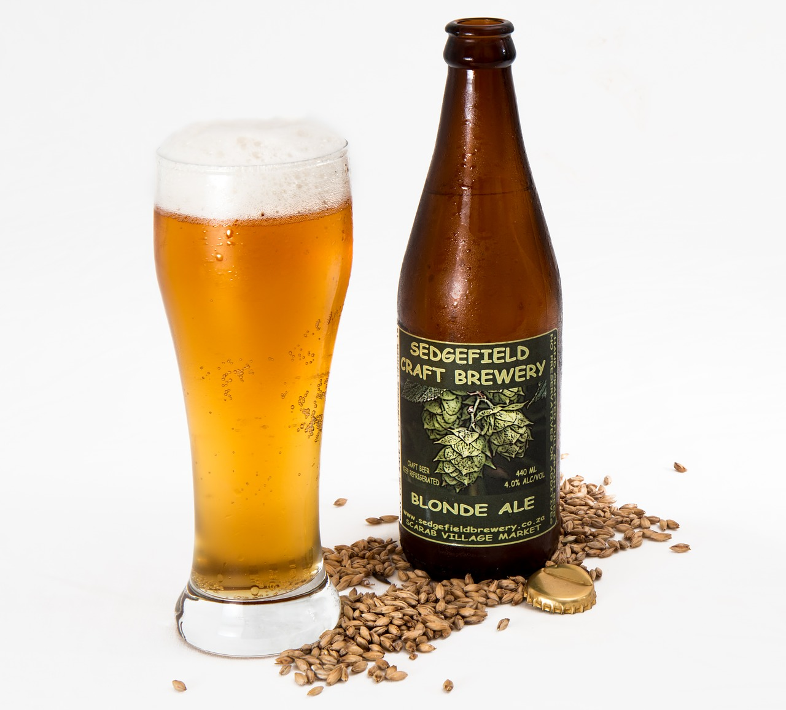

- SWEETROLL
- JAZBAY CROSTATA
- HONNINGBREW MEAD
Honningbrew Mead
introdution
- effects : Restore 20 Stamina. Stamina regenerates 25% slower for 20 seconds.
- FormID : 000508CA
- It is made in the meadery near Whiterun. It is apparently popular, as it is a competitor to the famous Black-Briar Mead. It is replaced with Black-Briar mead after completing "Dampened Spirits."
- If given to a Reveler, you will receive a Charmed Necklace.
- Honningbrew Mead is actually objectively superior to its primary competitor Black-Briar Mead, as both restore the same amount of stamina, but Honningbrew is both cheaper and has less severe negative effects.

recipe
- None. It's Trade Secret for Honningbrew meadery